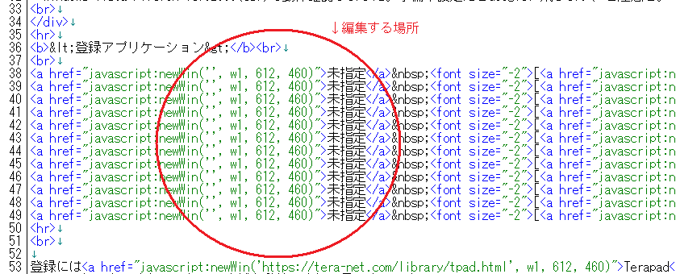
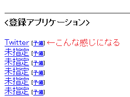

WEBホームページ選択画面（アドレスバー以外非表示）
・Windows Vista Firefox ver52.90(esr)で動作確認しました。予備未設定だとGoogleに飛びます、ご注意を。
<登録アプリケーション>
未指定 [予備]
未指定 [予備]
未指定 [予備]
未指定 [予備]
未指定 [予備]
未指定 [予備]
未指定 [予備]
未指定 [予備]
未指定 [予備]
未指定 [予備]
未指定 [予備]
登録にはTerapad を推奨しています。
メモ帳でもできなくはないですが自動整理されて見やすいです
【登録方法】
1.Terapad (推奨)でこのhtmlファイルを開きます。
2.コア(番号)などとコメントアウトされている場所が編集するべき場所です

3.例としてTwitterを登録する場合は「javascript:newWin('', w1, 612, 460)"」を「javascript:newWin('https://twitter.com', w1, 612, 460)"」に編集します
4.わかりやすいように「未指定」を「Twitter」に変更します
5.予備はお好みで設定してくださいこれで登録完了です。

参考サイト
開発者@hankati25543